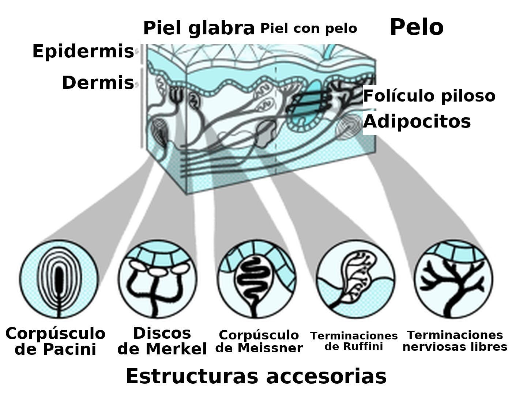
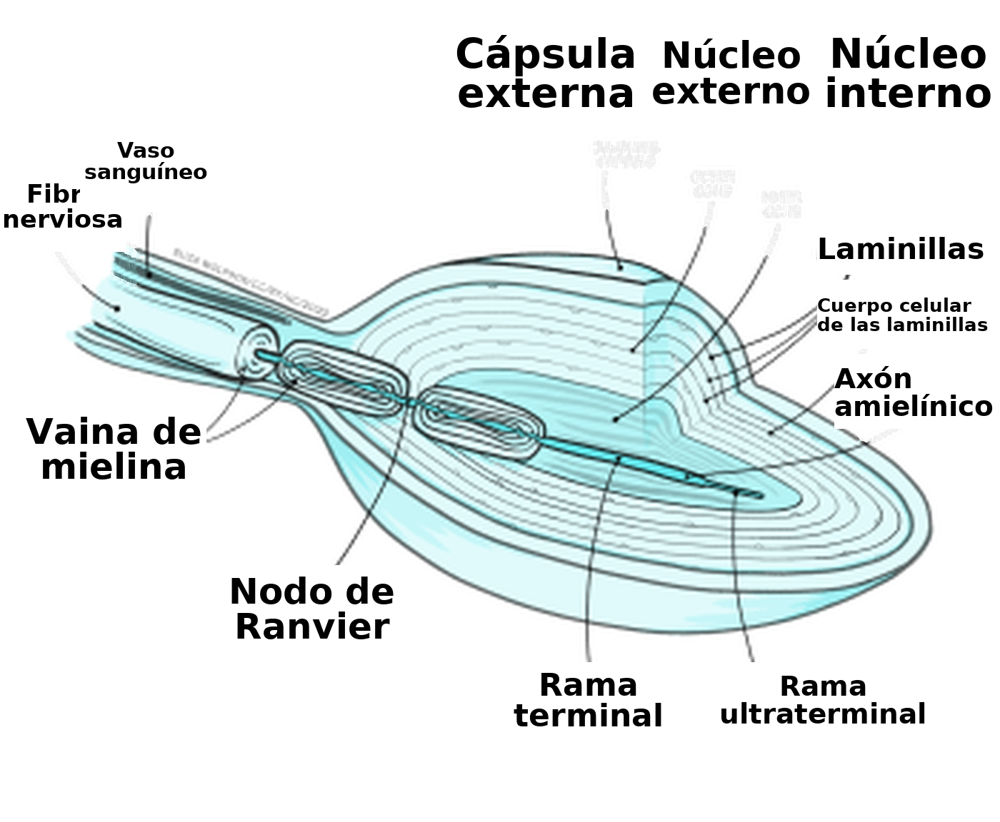
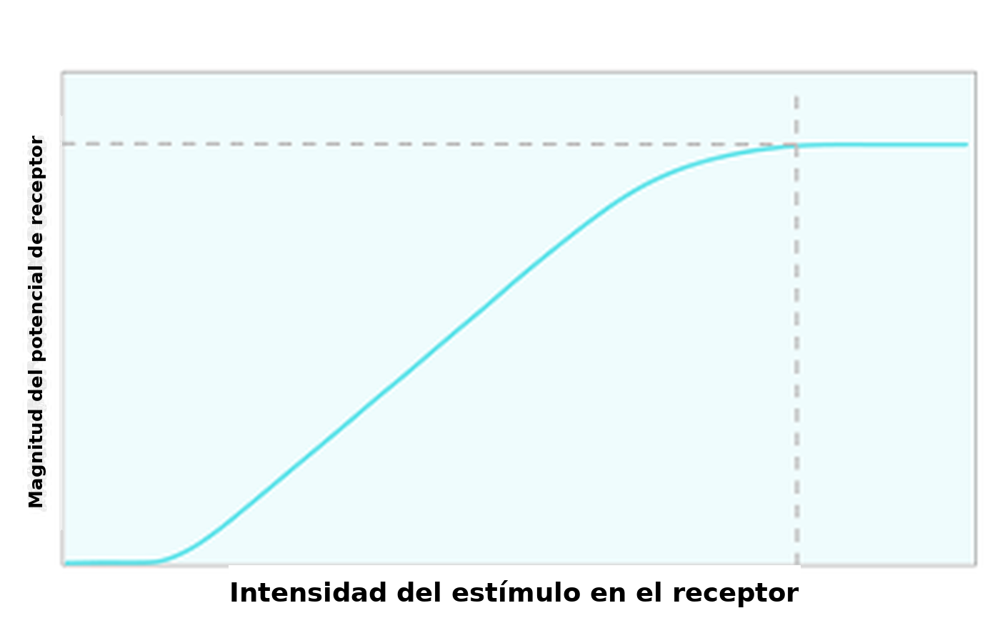
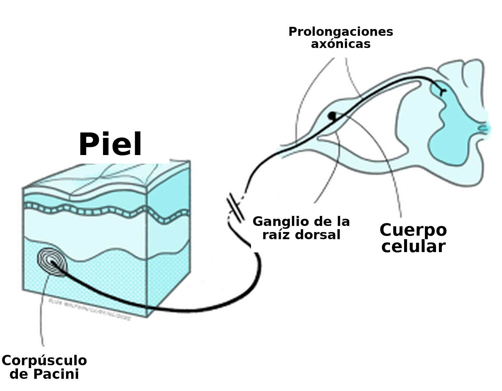
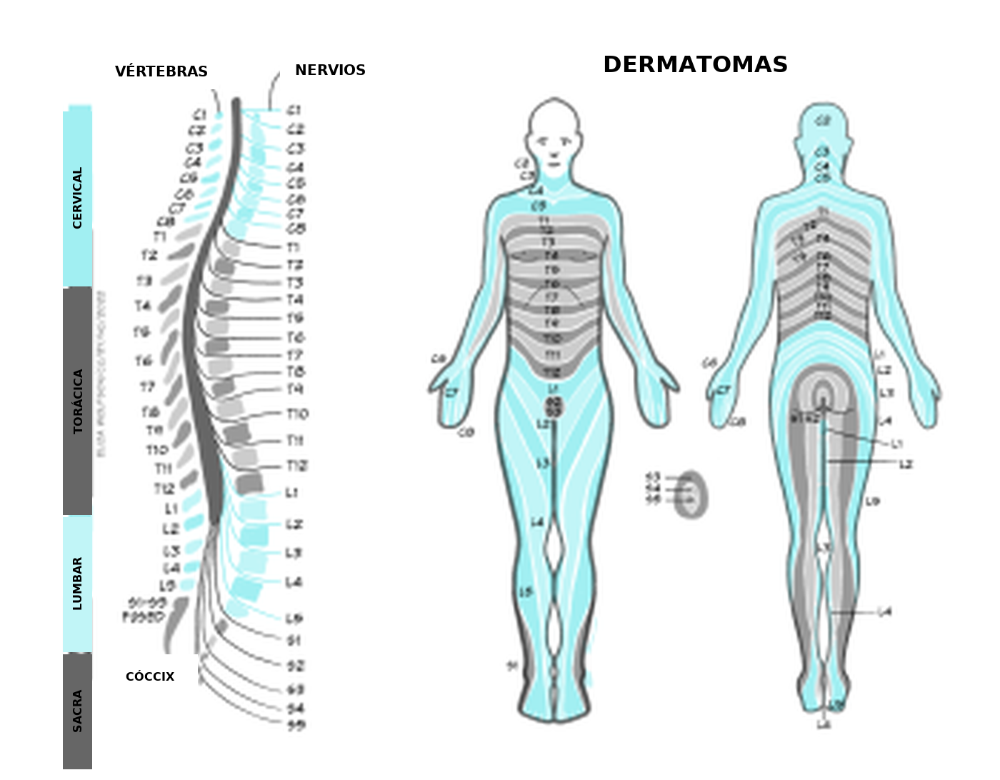
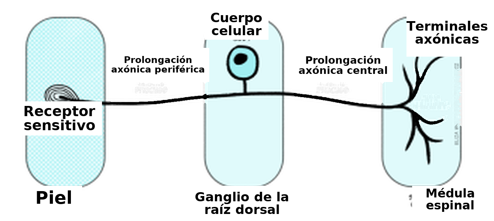
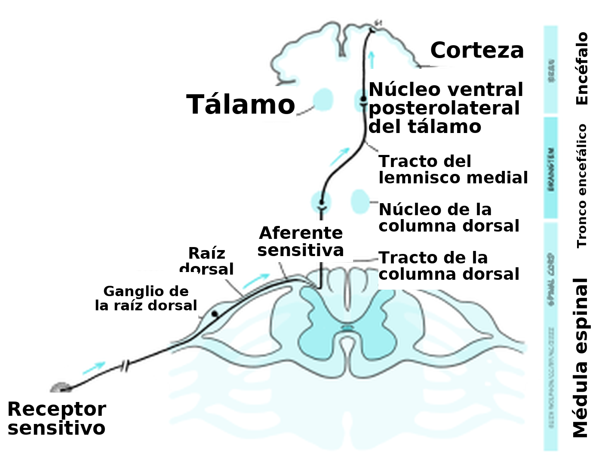
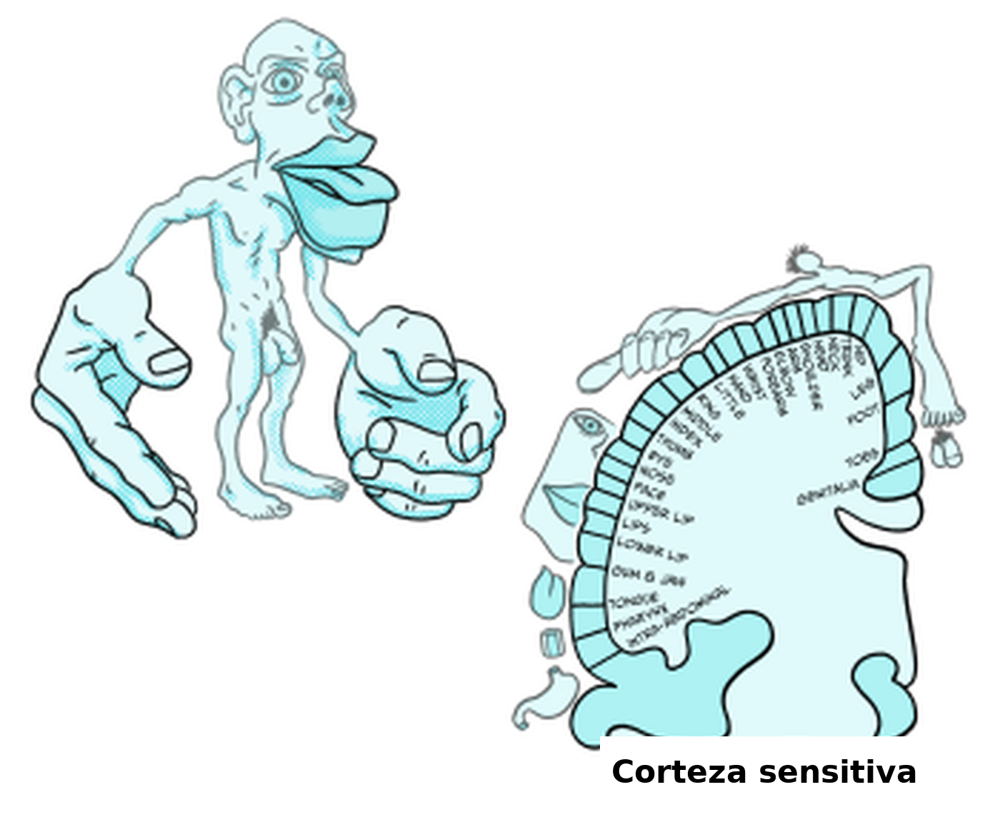
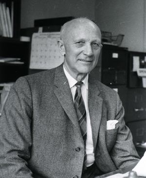
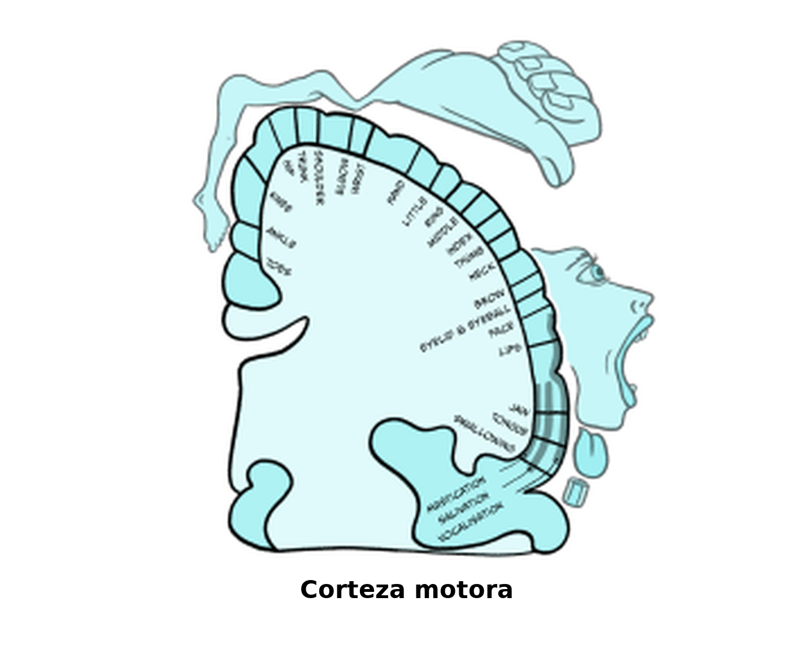

Sentir el mundo: el sentido del tacto
El tacto llega antes que la vista, antes que el habla. Es la primera lengua y la última, y siempre dice la verdad.
Margaret Atwood, poeta y novelista. The Blind Assassin (2000; traducción propia).
Como sugiere la cita inicial, el tacto es fundamental para nuestra experiencia del mundo, incluidas las interacciones con otras personas. Por eso es el punto de partida de este recorrido por los sentidos.
Cerrá los ojos un momento y prestá atención a las sensaciones que podés percibir en la piel y en el cuerpo. ¿Qué cosas podés detectar?
Las respuestas pueden ser muy variadas. Por ejemplo, podrías haber notado el contacto de la ropa con la piel, si la tela es áspera o suave, o cuán ajustada queda. Podrías haber sentido una brisa fresca en alguna parte del cuerpo, proveniente de una puerta o una ventana abierta. Incluso podrías haberte dado cuenta de que la postura resulta un poco incómoda, o dolorosa, después de permanecer demasiado tiempo en la misma posición.
Lo que experimentás en el ejercicio anterior es la somatosensación, es decir, los sentidos corporales. Incluye el sentido del tacto, y también la detección de la temperatura, el dolor y la propiocepción, que puede definirse como el sentido de la posición del propio cuerpo. En este primer capítulo nos vamos a concentrar en el tacto; el dolor se examina en el capítulo siguiente.
Detectar el tacto: la piel de cerca
Para entender cómo detectamos la información táctil, hace falta conocer un poco la estructura de la piel. La piel es el órgano más grande del cuerpo humano e incluye las células receptoras sensitivas que permiten detectar el tacto, además de vasos sanguíneos, glándulas sudoríparas y otras estructuras especializadas. Un dato decisivo para el sentido del tacto es que la piel puede describirse como un líquido viscoso, parecido a la miel de caña o a la miel. Se dice que posee viscoelasticidad: cuando se le aplican fuerzas, se generan en su interior tensiones y deformaciones que las células receptoras sensitivas pueden detectar.
Estas células receptoras sensitivas son distintas de los receptores de los que leíste al estudiar los neurotransmisores. Las células receptoras sensitivas son células completas, preparadas para detectar señales o estímulos sensoriales, y no una estructura subcelular que se une a neurotransmisores u otras moléculas pequeñas.
Hay cuatro tipos principales de células receptoras sensitivas, decisivas para el sentido del tacto. Cada una lleva el nombre de quien la describió:
- corpúsculos de Meissner
- discos de Merkel
- corpúsculos de Pacini
- terminaciones de Ruffini
Estos receptores son mecanorreceptores, porque detectan un estímulo mecánico. Todos pueden clasificarse como un tipo de neurona modificada. Eso significa que tienen un cuerpo celular y un axón, y que pueden generar un potencial de acción.
Los cuatro tipos de receptores se muestran en la Figura 4.1. En esa figura se ve que están situados a distintas profundidades de la piel. Los discos de Merkel y los corpúsculos de Meissner ocupan una posición superficial, mientras que los corpúsculos de Pacini y las terminaciones de Ruffini se ubican en la profundidad de la piel. Esa ubicación da una pista sobre la clase de estímulos que detecta cada receptor del tacto.

Si un receptor está ubicado muy profundo en la piel, ¿esperarías que pueda detectar un tacto muy leve o suave?
No. Las tensiones y deformaciones que se generan en la piel son proporcionales al estímulo, de modo que un tacto muy leve solo crea fuerzas en las zonas superficiales de la piel.
La investigación ya caracterizó estos receptores y hoy se comprende bien a qué tipo de estímulos responde cada uno. Un rasgo común de los sistemas sensoriales es la adaptación: un cambio en la respuesta del receptor —por lo general, una disminución— ante un estímulo constante. La adaptación es muy importante en los sistemas sensoriales porque la información decisiva para la supervivencia suele provenir de los estímulos que cambian, y no de los que permanecen constantes. Al señalar el cambio, los sistemas sensoriales evitan gastar energía en señales que solo comunican que todo sigue igual y que, por lo tanto, no aportan información nueva. Sobre esta base, los receptores del tacto pueden definirse como receptores de adaptación rápida o lenta. Los de adaptación rápida dejan de responder muy pronto a un estímulo constante, mientras que los de adaptación lenta suelen seguir respondiendo, aunque con menor intensidad. Esto se resume en la Tabla 1.
|
Células receptoras sensitivas |
Ubicación |
Estímulo activador |
Adaptación |
|
Corpúsculos de Meissner |
Superficial |
Tacto leve y vibración |
Rápida |
|
Discos de Merkel |
Superficial |
Tacto leve y presión |
Lenta |
|
Corpúsculos de Pacini |
Profunda |
Presión intensa y vibración |
Rápida |
|
Terminaciones de Ruffini |
Profunda |
Estiramiento de la piel |
Lenta |
Tabla 1. Características de las células receptoras sensitivas del tacto
Antes de ver cómo el cuerpo convierte las señales táctiles en señales neurales, conviene prestar atención a la distribución general de estos receptores en el cuerpo, porque eso explica por qué algunas regiones son mucho más sensibles que otras. Si tenés tiempo y alguien dispuesto a ayudarte, hacé el breve experimento del Recuadro 1 antes de seguir leyendo. Si no tenés tiempo ahora, podés volver a él en cualquier momento.
Recuadro 1. Experimento de discriminación de dos puntos
Este experimento muestra que distintas zonas del cuerpo difieren en su capacidad para distinguir un estímulo único de dos estímulos aplicados sobre la piel. Cuando dos puntas (por ejemplo, los extremos de un palillo o de un compás) tocan la piel con suavidad al mismo tiempo, por lo general se sienten como dos puntos distintos. Sin embargo, si están muy cerca, pueden detectarse como un solo punto. Cada zona del cuerpo tiene un umbral diferente para la separación que se llega a sentir: es el «umbral de discriminación de dos puntos».
Vas a necesitar a otra persona para este experimento. Leé todos los pasos con atención antes de empezar y reuní el siguiente material:
- Un clip grande, u otro objeto con dos puntas pequeñas, que pueda doblarse en forma de «U» de modo que ambas puntas queden al mismo nivel.
- Algo que sirva de venda para los ojos.
- Una regla o una cinta métrica.
Seguí estos pasos (se supone que vos realizás el experimento y que la otra persona participa):
Acuerden cuáles tres de estas regiones van a investigar: dedo índice, palma de la mano, parte superior del brazo, frente, muslo.
Explicále a la persona participante que, con los ojos vendados, le vas a tocar la piel con el clip y le vas a pedir que diga, después de cada contacto, si sintió una punta o dos. Aclarále que vas a elegir al azar si la tocás con una punta o con dos, y que no le vas a decir si acertó o no después de cada respuesta.
Cuando la persona tenga los ojos vendados, podés empezar la prueba. En la primera zona del cuerpo, aplicá dos puntas o una sola, en orden aleatorio. En los contactos con dos puntas, empezá con las puntas muy juntas y andá separándolas de a poco. Buscás la separación a partir de la cual la persona indica correctamente que detecta dos puntos. En ese momento, medí la distancia entre las dos puntas. Recordá no decirle si acertó. Después repetí el procedimiento en la misma zona, esta vez empezando con las puntas más separadas y acercándolas. Como antes, anotá la última distancia a la que detecta dos puntos. Calculá el promedio de las dos distancias y anotalo como umbral de discriminación.
Repetí todo el procedimiento en las otras dos zonas del cuerpo.
Como referencia, estos son algunos valores típicos, en milímetros (mm):
- Dedo índice: 2 mm
- Parte superior del brazo: 47 mm
- Palma de la mano: 13 mm
- Frente: 18 mm
- Muslo: 46 mm
Si se trazan los umbrales de todas las regiones del cuerpo, se observa que algunas son más sensibles que otras. Por ejemplo, el labio superior y las yemas de los dedos son mucho más sensibles que la espalda. Esa sensibilidad se debe a los distintos tipos de receptores y a los campos receptivos, es decir, al área de piel en la que un contacto es detectado por una sola célula receptora. Donde hay una densidad alta de receptores con campos receptivos pequeños y bien delimitados, las zonas son muy sensibles. Es probable que dos puntos cercanos caigan en campos receptivos distintos y, por lo tanto, se perciban por separado. En cambio, donde los campos receptivos son grandes o se superponen, la zona es menos sensible, porque es probable que dos puntos activen el mismo receptor y se perciban como un único estímulo.
Hasta aquí nos concentramos en la piel y en los receptores que pueden detectar información táctil, pero todavía no vimos cómo ocurre esa detección. Para que el sistema nervioso utilice una señal sensorial, esta tiene que convertirse en una señal neural, o en un cambio del potencial de membrana. El proceso por el cual un estímulo sensorial se convierte en una señal eléctrica, en forma de potencial de membrana, se denomina transducción.
Del tacto al impulso nervioso
La transducción es un proceso común a todos los sistemas sensoriales, pero su mecanismo exacto varía según el estímulo sensorial y el receptor implicado. Gran parte de lo que sabemos sobre la transducción del tacto proviene de estudios en corpúsculos de Pacini, porque fueron los más fáciles de abordar en el laboratorio. Muchos de esos estudios se hicieron, en realidad, en células de gatos, muy parecidas a las humanas.
La Figura 4.2 muestra la estructura de un corpúsculo de Pacini. Allí se ve que el corpúsculo está formado por varias capas, como las de una cebolla. En el centro de esas capas hay una terminación nerviosa sensitiva con una punta amielínica. Recordá que la mielina es una sustancia grasa que suele cubrir los axones para proporcionarles aislamiento eléctrico.

Cuando se aplica una fuerza a la piel, el corpúsculo en capas actúa como un filtro mecánico y la deformación creada por la fuerza se transmite, a través del corpúsculo, hasta la punta amielínica. La membrana de esa punta contiene canales iónicos mecanosensibles. El término «mecanosensible» indica que los canales se abren y se cierran según la fuerza mecánica que se les aplique.
Durante la transducción, la fuerza aplicada hace que los canales iónicos se abran. Eso provoca un ingreso de iones sodio (Na+) a la punta amielínica del corpúsculo de Pacini. De lo que estudiaste sobre el potencial de reposo y el potencial de acción, deberías recordar que los iones se desplazan a favor de sus gradientes eléctrico y químico. En este caso, los iones sodio, de carga positiva, son más abundantes fuera del corpúsculo, en el espacio extracelular de carga positiva. Cuando los canales iónicos se abren, ingresan a la célula, que tiene carga negativa y una concentración más baja de ese ion.
A partir de lo que sabés sobre los potenciales de acción, ¿qué efecto creés que tendrá este ingreso de iones sodio en el corpúsculo de Pacini?
Es de esperar que hayas notado que despolarizaría la célula, porque el interior se vuelve menos negativo que en reposo. Aquí, «reposo» significa «en ausencia de cualquier estímulo táctil».
Esta despolarización se denomina potencial de receptor, porque es un cambio del potencial de membrana dentro de una célula receptora sensitiva, provocado por la presencia de un estímulo sensorial. El potencial de receptor se parece a un potencial postsináptico en que se degrada con bastante rapidez; pero, si la despolarización es suficiente en el punto donde la punta amielínica se encuentra con la primera región mielinizada (Figura 4.2), se dispara un potencial de acción.
De lo que estudiaste sobre los potenciales de acción, deberías recordar que implican un movimiento coordinado de iones sodio y potasio a través de la membrana, y que este tipo de señal puede transmitirse a lo largo de grandes distancias. Esto es especialmente importante en los sentidos, porque algunas células receptoras sensitivas están muy lejos de la médula espinal y del encéfalo. En el caso del tacto, las células receptoras sensitivas del dedo del pie tienen que poder enviar señales a lo largo de más de un metro hasta la médula espinal.
Antes de examinar de cerca la vía que sigue la información táctil hasta el encéfalo, conviene observar la relación entre el tamaño del estímulo y el tamaño del potencial de receptor. La Figura 4.3 muestra que, a medida que aumenta la intensidad del estímulo, el potencial de receptor se agranda.

Los potenciales de acción son señales de todo o nada: no pueden cambiar de tamaño. ¿Qué creés que implica un potencial de receptor más grande para los potenciales de acción que se generan?
Como los potenciales de acción no pueden agrandarse, tienen que codificar el estímulo mayor de otra manera. Lo hacen mediante una frecuencia más alta de potenciales de acción.
Una vez generado el potencial de acción en las neuronas que detectan el tacto, esa información tiene que viajar hasta el encéfalo.
Vías del tacto hacia el encéfalo
Aunque las terminaciones sensitivas de estas células receptoras se encuentran por todo el cuerpo, sus cuerpos celulares están en el ganglio de la raíz dorsal, como muestra la Figura 4.4.

Recordá que la estructura de la médula espinal es relativamente simple y se repite desde la base (regiones sacras) hasta el extremo superior (regiones cervicales). Esa estructura repetida implica que hay un ganglio de la raíz dorsal en cada segmento, o nivel, de la médula espinal. En cuál ingresa la información depende de la región del cuerpo de la que proviene. La Figura 4.5 muestra los nervios cervicales, torácicos, lumbares y sacros que entran en los distintos segmentos de la médula espinal, y las regiones del cuerpo de las que reciben información.

Con la Figura 4.5, ¿podés identificar qué nervio espinal proviene del pulgar?
C6 lleva la información del pulgar hacia la médula espinal.
Observá que la figura no hace referencia a la información que proviene de la cara. Existe un sistema aparte para transportar la información somatosensitiva de la cara, llamado sistema trigeminal. Funciona de manera muy parecida al que se describe aquí, salvo que las neuronas sensitivas ingresan al sistema nervioso central por el tronco encefálico, y no por la médula espinal.
Cuando la información de la terminación nerviosa sensitiva llega al cuerpo celular del ganglio de la raíz dorsal correspondiente, sigue hacia la médula espinal por la raíz dorsal, formada por los axones de estas células sensitivas. Estas neuronas tienen una estructura algo distinta de la de las neuronas típicas del encéfalo, porque poseen un axón bifurcado: el axón se divide en dos (Figura 4.6). Eso permite que la misma neurona transmita información desde la terminación nerviosa sensitiva, donde están los canales mecanosensibles, más allá del cuerpo celular y hasta la médula espinal.

Hay varias vías por las que la información táctil puede llegar al encéfalo, pero aquí nos vamos a concentrar en la más importante, la vía de la columna dorsal y el lemnisco medial. Esa vía se muestra en la Figura 4.7.

Los axones entran en la médula espinal y ascienden directamente por ella, del mismo lado de la línea media, hasta hacer sinapsis con la neurona siguiente de la vía en los núcleos de la columna dorsal (NCD; DCN en inglés), en el bulbo raquídeo. Esa neurona siguiente se denomina «neurona de segundo orden», porque la célula receptora sensitiva es una neurona modificada y, por lo tanto, fue la neurona de primer orden. Los axones de las neuronas de segundo orden viajan por una vía llamada lemnisco medial hasta el tálamo. En concreto, llegan a una región llamada núcleo ventral posterolateral del tálamo (VPL), donde hacen sinapsis otra vez con la neurona de tercer orden. La neurona de tercer orden lleva la señal hasta la corteza somatosensitiva primaria (S1), en el lóbulo parietal.
Desde hace tiempo se sabe que la representación del tacto en la corteza somatosensitiva está organizada de forma topográfica: las regiones del cuerpo se representan en proporción a la aferencia que reciben, y así se forma en S1 un mapa en miniatura del cuerpo. Se lo conoce como homúnculo somatosensitivo, o «hombrecito», y se propuso por primera vez en 1937 (Figura 4.8) (Penfield & Boldrey, 1937). Gran parte de la investigación que condujo a esa propuesta la realizó Penfield, un neurocirujano que aplicaba estimulación eléctrica a la superficie cortical durante cirugías de personas con epilepsia (Recuadro 2).

Recuadro 2. Cartografiar el cerebro

Wilder Penfield (1891-1976; Figura 4.9) operaba a personas con epilepsia o con tumores cerebrales. Durante esa cirugía aplicaba una pequeña estimulación eléctrica a la superficie externa de la corteza expuesta. Las personas permanecían conscientes durante la operación y podían comunicarse con Penfield, de modo que le contaban qué sentían cuando estimulaba distintas regiones. Que la persona esté consciente no es infrecuente en la cirugía cerebral y permite al equipo quirúrgico apuntar con cuidado a zonas específicas.
A lo largo de los años, Penfield realizó estimulación cortical en más de 100 personas y llevó notas y dibujos minuciosos de las respuestas a zonas específicas de estimulación. De esa investigación nació el homúnculo, que en latín significa «ser humano muy pequeño». El trabajo de Penfield no carece de limitaciones: cabe señalar que no se registraron con exactitud los patrones ni la intensidad de la estimulación, de modo que la representación final podría no ser del todo precisa (Matias, 2020). Pese a esas posibles inexactitudes, la idea se mantuvo y, casi 100 años después, todavía se usa para inspirar o explicar investigaciones (Pan, Peck, Young & Holodny, 2012).
Al homúnculo sensitivo le corresponde un homúnculo motor, representado sobre la corteza motora (Figura 4.10). Las dos representaciones están conectadas, y esa conexión probablemente sea decisiva para algunos aspectos del movimiento, incluido el control motor fino. Por ejemplo, se encontró que una conectividad alterada entre estas áreas puede explicar las dificultades del control motor fino en el trastorno del espectro autista (Thompson et al., 2017).

Es importante reconocer que el procesamiento del tacto no se detiene en la corteza somatosensitiva primaria. La investigación sugiere que interviene una red cortical extensa: las señales de S1 continúan hacia la corteza somatosensitiva secundaria (S2), también situada en la corteza parietal, y hacia la corteza insular, un área cortical alojada en la profundidad de los pliegues corticales, entre los lóbulos parietal y temporal (Rullmann, Preusser & Pleger, 2019).
La percepción del tacto
Ya consideraste cómo las células receptoras sensitivas detectan los estímulos táctiles, el proceso de transducción y la forma en que la información viaja hasta el encéfalo y se representa en él. En este apartado final vamos a ver cómo se percibe el tacto, es decir, qué significado puede extraerse del sentido del tacto.
El tacto podría percibirse simplemente como el encuentro físico con los objetos del entorno, pero en realidad es mucho más que eso. No nos limitamos a encontrar objetos y reconocer que están ahí. A través del tacto podemos obtener detalles de su tamaño, peso, textura, rigidez y otras características. Todo eso nos permite identificar objetos concretos y darles respuestas conductuales adecuadas.
Qué percibimos a partir del tacto puede depender del tipo de tacto en el que participamos. El tacto puede clasificarse como activo o pasivo. El tacto activo exige el movimiento de los dedos sobre el objeto, es decir, una interacción intencional con el estímulo, mientras que el tacto pasivo consiste simplemente en que el objeto se presione contra los dedos. Un ejemplo de tacto activo es extender la mano para sentir la tela de una prenda que estás pensando en comprar y pasarla entre los dedos para apreciar cualidades como la suavidad, el grosor y el peso. En cambio, el tacto pasivo sería que empujaran esa tela contra tus dedos.
Las primeras investigaciones sugirieron que el tacto activo podía ser más informativo para determinar la forma de un objeto (Gibson, 1962), pero trabajos posteriores, que controlaron detalles como la presión con la que el objeto se aplicaba a la piel, mostraron poca diferencia entre los dos tipos de tacto, o incluso una ventaja del tacto pasivo (Chapman, 1994). Se demostró que la activación de la corteza somatosensitiva primaria difiere entre las dos modalidades, con una activación mayor en condiciones de tacto activo. Se propuso que esa mayor activación del tacto activo podría deberse a la activación que llega desde la corteza motora a la corteza somatosensitiva primaria cuando se mueven los dedos (Simões-Franklin, Whitaker & Newell, 2011).
También se argumentó que las diferencias entre estos dos tipos de tacto pueden explicarse por la participación de otros sistemas, en particular la propiocepción. El tacto activo activa las mismas células receptoras sensitivas de la piel que el tacto pasivo, pero además activa los receptores propioceptivos, es decir, los que detectan la posición del cuerpo: en este ejemplo, la de los dedos. Se propuso que las aferencias táctiles y propioceptivas convergen en el encéfalo y provocan una excitación mayor (Cybulska-Klosowicz et al., 2020). Sin embargo, otros trabajos respondieron que las dos aferencias compiten, en lugar de combinarse, dentro del encéfalo (Dione & Facchini, 2021). Todavía queda mucho por hacer para comprender del todo los efectos del tacto activo y del tacto pasivo sobre el encéfalo.
El tacto y el vínculo social
De lo que leíste hasta aquí debería quedar claro que el tacto es sumamente importante para percibir el mundo que nos rodea, incluido el reconocimiento de los objetos con los que el cuerpo entra en contacto. Este tipo de tacto puede considerarse tacto discriminativo. Sin embargo, no solo entramos en contacto con objetos inanimados. Gran parte del contacto físico que tenemos en el mundo es con otras personas y, en ese contexto, la percepción del tacto suele referirse a la experiencia afectiva, más que a la discriminación. Este tacto afectivo cumple una función decisiva en el vínculo social (Portnova, Proskurnina, Sokolova, Skorokhodov & Varlamov, 2020).
El tacto afectivo comienza a una edad muy temprana, y el contacto entre quien ejerce la crianza y el bebé es una parte clave del proceso de cuidado. Hoy un conjunto amplio de investigaciones muestra vínculos entre las interacciones táctiles tempranas de crianza y el funcionamiento social y emocional posterior. Se piensa que esta relación está mediada, en parte, por el eje hipotálamo-hipófiso-adrenal (HHA; HPA en inglés), que sustenta las respuestas de estrés del organismo y puede ser inhibido por distintas hormonas, entre ellas la oxitocina (Walker & McGlone, 2013). La investigación en roedores mostró que una conducta de crianza más intensa, en forma de lamido, acicalamiento, apiñamiento y juego, se asocia con una mayor densidad de conexiones en la corteza somatosensitiva de las crías (Seelke, Perkeybile, Grunewald, Bales & Krubitzer, 2016).
Comparaciones de ese tipo son difíciles de realizar en seres humanos, porque no sería ético dividir a bebés y a quienes ejercen la crianza en condiciones de cuidado alto y bajo. Un enfoque posible es considerar un grupo que, con probabilidad, haya recibido menos cuidado, sin ninguna intervención experimental. Ese enfoque lo adoptó un grupo de investigación que, en el Reino Unido, comparó a personas que habían egresado del sistema de cuidado con personas que no habían estado en ese sistema (Devine et al., 2020). Señalaron que el principal motivo de ingreso al sistema de cuidado en el Reino Unido es el abandono y el maltrato, y de ahí infirieron que quienes estuvieron bajo cuidado podrían haber recibido menos estimulación táctil de crianza durante la infancia. El equipo usó una serie de medidas de sensibilidad y encontró que las personas egresadas del sistema de cuidado eran menos sensibles a los componentes afectivos del tacto.
No solo la crianza temprana puede modificar la sensibilidad táctil y el tacto afectivo. La investigación encontró que los niveles de empatía (Schaefer, Kühnel, Rumpel & Gärtner, 2021) y de soledad (Saporta et al., 2022) también pueden influir en cómo las personas perciben el tacto afectivo. Además, la presencia de ciertos diagnósticos puede incidir en la percepción del tacto. Por ejemplo, las personas con trastorno del espectro autista presentan respuestas alteradas al tacto interpersonal (Baranek, David, Poe, Stone & Watson, 2006).
Con este capítulo sobre el tacto completaste la primera parte de la sección dedicada a los sentidos. El capítulo te presentó algunos conceptos clave, entre ellos la transducción, las vías sensitivas y las implicaciones sociales más amplias de los sentidos.
Ideas clave
En este capítulo aprendiste que:
- El órgano sensorial del tacto es la piel, el órgano más grande del cuerpo, que contiene las células receptoras sensitivas decisivas para el tacto: los corpúsculos de Meissner, los discos de Merkel, los corpúsculos de Pacini y las terminaciones de Ruffini.
- Cada tipo de célula receptora sensitiva del tacto se encuentra en una ubicación específica de la piel y puede dar lugar a una sensación específica. Los receptores también difieren en la rapidez con la que se adaptan.
- El tipo de receptores presentes y la densidad con la que están agrupados determinan la sensibilidad de las distintas partes del cuerpo.
- La información sensitiva entra en la médula espinal y asciende hasta los núcleos de la columna dorsal, en el bulbo raquídeo, antes de cruzar al lado contralateral por el lemnisco medial. Después ingresa en el núcleo ventral posterolateral del tálamo y continúa hacia el área somatosensitiva primaria y otras regiones corticales para su procesamiento ulterior.
- El tacto puede cumplir funciones discriminativas y afectivas, y puede considerarse en términos de tacto activo y tacto pasivo.
- El tacto afectivo es decisivo para el funcionamiento social y emocional por su papel en el vínculo social. La adversidad temprana, en forma de falta de estimulación táctil de crianza, puede tener un impacto duradero. La percepción alterada del tacto afectivo también puede relacionarse con la empatía, la soledad y la presencia de diagnósticos como el trastorno del espectro autista.
Referencias
Baranek, G. T., David, F. J., Poe, M. D., Stone, W. L., & Watson, L. R. (2006). Sensory experiences questionnaire: discriminating sensory features in young children with autism, developmental delays, and typical development. J Child Psychol Psychiatry, 47(6), 591-601. https://doi.org/10.1111/j.1469-7610.2005.01546.x
Chapman, C. E. (1994). Active versus passive touch: factors influencing the transmission of somatosensory signals to primary somatosensory cortex. Canadian Journal of Physiology and Pharmacology, 72(5), 558-570. https://doi.org/10.1139/y94-080
Cybulska-Klosowicz, A., Tremblay, F., Jiang, W., Bourgeon, S., Meftah, E.-M., & Chapman, C. E. (2020). Differential effects of the mode of touch, active and passive, on experience-driven plasticity in the S1 cutaneous digit representation of adult macaque monkeys. Journal of Neurophysiology, 123(3), 1072-1089. https://doi.org/10.1152/jn.00014.2019
Devine, S. L., Walker, S. C., Makdani, A., Stockton, E. R., McFarquhar, M. J., McGlone, F. P., & Trotter, P. D. (2020). Childhood Adversity and Affective Touch Perception: A Comparison of United Kingdom Care Leavers and Non-care Leavers. Frontiers in Psychology, 11. https://doi.org/10.3389/fpsyg.2020.557171
Dione, M., & Facchini, J. (2021). Experience-driven remodeling of S1 digit representation in awake monkeys: the challenge of comparing active and passive touch. J Neurophysiol, 125(3), 805-808. https://doi.org/10.1152/jn.00380.2020
Gibson, J. J. (1962). Observations on active touch. Psychological Review, 69(6), 477-491. https://doi.org/10.1037/h0046962
Matias, C. M. (2020). Edwin Boldrey and Wilder Penfield’s homunculus: From past to present. World Neurosurgery, 135, 14-15. https://doi.org/10.1016/j.wneu.2019.11.144
Pan, C., Peck, K. K., Young, R. J., & Holodny, A. I. (2012). Somatotopic organization of motor pathways in the internal capsule: a probabilistic diffusion tractography study. AJNR American Journal of Neuroradiology, 33(7), 1274-1280. https://doi.org/10.3174/ajnr.A2952
Penfield, W., & Boldrey, E. (1937). Somatic motor and sensory representation in the cerebral cortex of man as studied by electrical stimulation. Brain, 60(4), 389-443. https://doi.org/10.1093/brain/60.4.389
Portnova, G. V., Proskurnina, E. V., Sokolova, S. V., Skorokhodov, I. V., & Varlamov, A. A. (2020). Perceived pleasantness of gentle touch in healthy individuals is related to salivary oxytocin response and EEG markers of arousal. Experimental Brain Research 238(10), 2257-2268. https://doi.org/10.1007/s00221-020-05891-y
Rullmann, M., Preusser, S., & Pleger, B. (2019). Prefrontal and posterior parietal contributions to the perceptual awareness of touch. Scientific Reports, 9(1), 16981. https://doi.org/10.1038/s41598-019-53637-w
Saporta, N., Peled-Avron, L., Scheele, D., Lieberz, J., Hurlemann, R., & Shamay-Tsoory, S. G. (2022). Touched by loneliness-how loneliness impacts the response to observed human touch: a tDCS study. Social Cognitive and Affective Neuroscience, 17(1), 142-150. https://doi.org/10.1093/scan/nsab122
Schaefer, M., Kühnel, A., Rumpel, F., & Gärtner, M. (2021). Dispositional empathy predicts primary somatosensory cortex activity while receiving touch by a hand. Scientific Reports, 11(1), 11294. https://doi.org/10.1038/s41598-021-90344-x
Seelke, A. M. H., Perkeybile, A. M., Grunewald, R., Bales, K. L., & Krubitzer, L. A. (2016). Individual differences in cortical connections of somatosensory cortex are associated with parental rearing style in prairie voles (Microtus ochrogaster). Journal of Comparative Neurology, 524(3), 564-577. https://doi.org/10.1002/cne.23837
Simões-Franklin, C., Whitaker, T. A., & Newell, F. N. (2011). Active and passive touch differentially activate somatosensory cortex in texture perception. Human Brain Mapping, 32(7), 1067-1080. https://doi.org/10.1002/hbm.21091
Thompson, A., Murphy, D., Dell’Acqua, F., Ecker, C., McAlonan, G., Howells, H., Baron-Cohen, S., Meng-Chuan, L., Lombardo, M. V., the MRC AIMS Consortium, & Catani, M. (2017). Impaired communication between the motor and somatosensory homunculus is associated with poor manual dexterity in autism spectrum disorder. Biological Psychiatry, 81(3), 211-219. https://doi.org/10.1016/j.biopsych.2016.06.020
Walker, S., & McGlone, F. (2013). The social brain: neurobiological basis of affiliative behaviours and psychological well-being. Neuropeptides, 47(6), 379-393. https://doi.org/10.1016/j.npep.2013.10.008